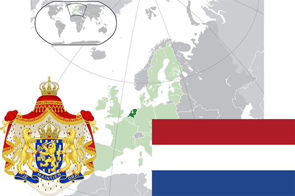

To`liq nomi: Niderlandiya Qirolligi
Region: G’arbiy Yevropa
Qonunchilik shakli: Konstitutsion rohiblik
Mustaqillik kuni: 26 July 1581-yil (Ispaniyadan)
Poytaxt: Amsterdam
Maydoni: 41,543 km2
Chegaradosh davlatlari: Belgiya, Germaniya
Aholisi: 17,200,671 (2018-yil yanvar)
Aholi zichligi: 414.4/km2
Aholining o`rtacha yoshi: 81,30 yil (2017-yil)
Rasmiy tili: Nemis tili
Dini: 50,1 % Boshqa dinlar, 43% xristian, 4,9 % islom
Pul birligi: Yevro
Telefon prefiksi: +599
Internet domen: .nl
Xalqaro tashkilotlarga a`zoligi: BMT, NATO, UNESCO
Dengiz va okeanlarga chiqishi: Shimoliy dengiz
YIM: Butun: $846 mlrd. (2017-yil) Jon boshiga: $44,654
Yirik shaharlari: Amsterdam, Rotterdam, Utrext, Eyndhoven